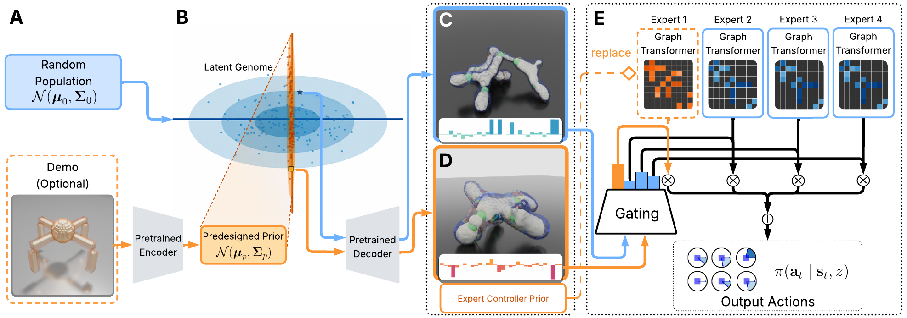

ECo-MoE: Embodiment-Conditioned Mixture of Experts Increases the Evolvability of Robots
ICML 2026
Northwestern University
TL;DR: We introduce a novel abstraction and operationalization of evolution that co-optimizes latent-gated mixtures of experts and designs.
Abstract
In this paper, we introduce a model of evolution and learning in robots that co-optimizes a distribution of latent design vectors (genotypes) and a mixture of control experts (neural modules), which are gated by the latent coordinates of each decoded design (phenotype). This provides a scalable alternative to co-design algorithms that either train an individual policy for every robot, which is inefficient, or a monolithic universal controller for all robots, which results in overly conservative structures and behaviors. Our approach lies somewhere between these two extremes, preserving ancestral knowledge in a unified yet modular framework in which different body plans activate and deactivate different combinations of learned sensorimotor circuits for goal-directed behavior. This allows one part of the controller to be overhauled to better suit new species of designs as they emerge without disrupting the hard-earned knowledge contained within other expert modules. It also allows pretrained expert policies to be directly plugged into the mixture, which can steer evolution into otherwise unexplored areas of latent space containing desired morphological traits. We refer to this process as "evo by demo" and explore how it may be used to guide freeform evolution toward canonical structures defined by the pretrained model.
Method

Citation
@inproceedings{wang2026ecomoe,
title = {ECo-MoE: Embodiment-Conditioned Mixture of Experts Increases the Evolvability of Robots},
author = {Yibin Wang and Muhan Li and Zihan Guo and Sam Kriegman},
booktitle = {Proceedings of the International Conference on Machine Learning (ICML)},
year = {2026}
}